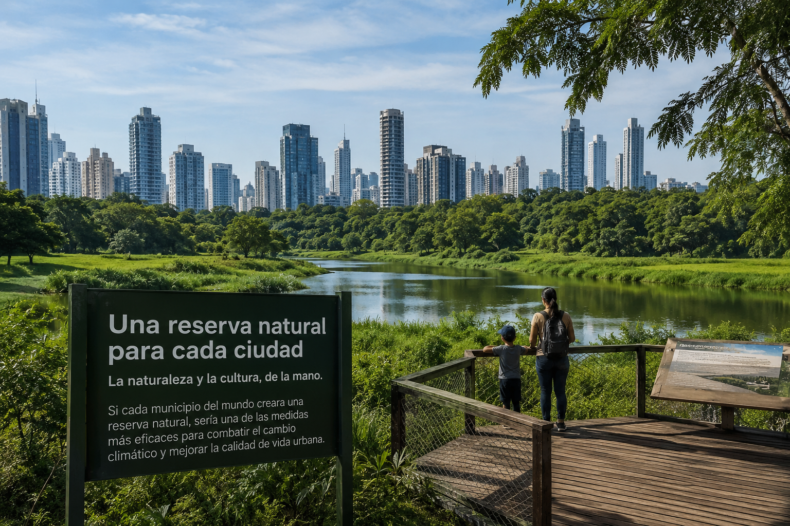
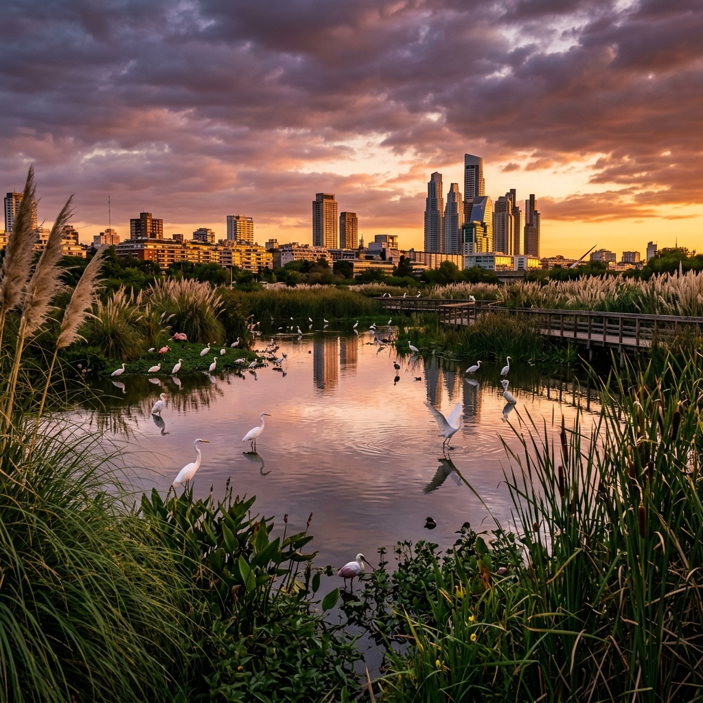
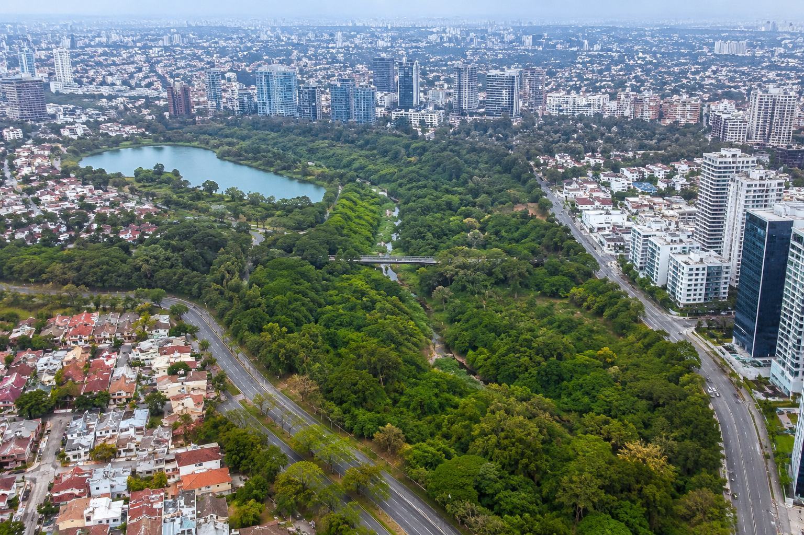
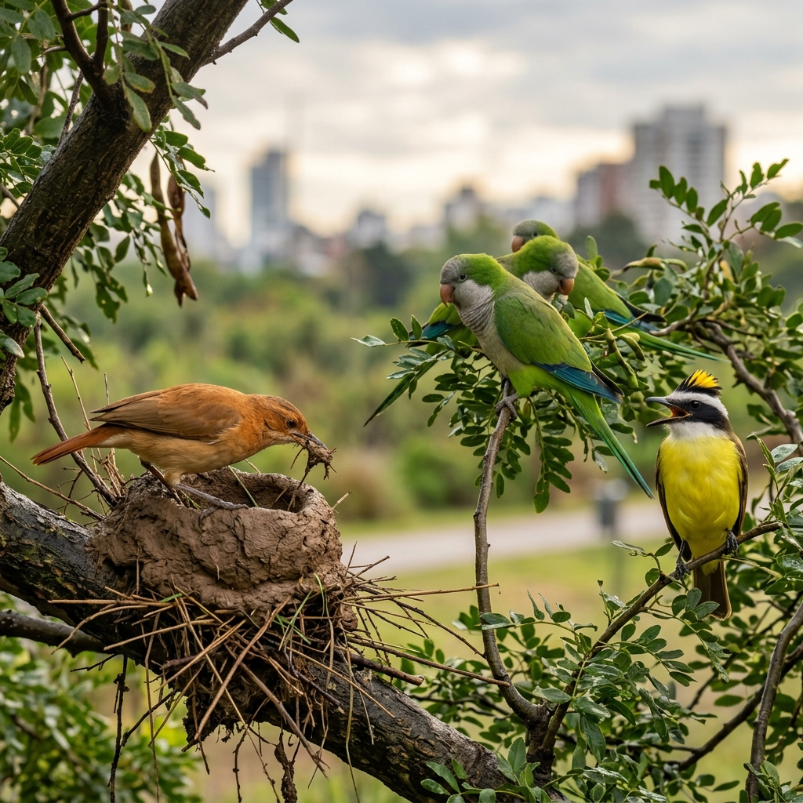
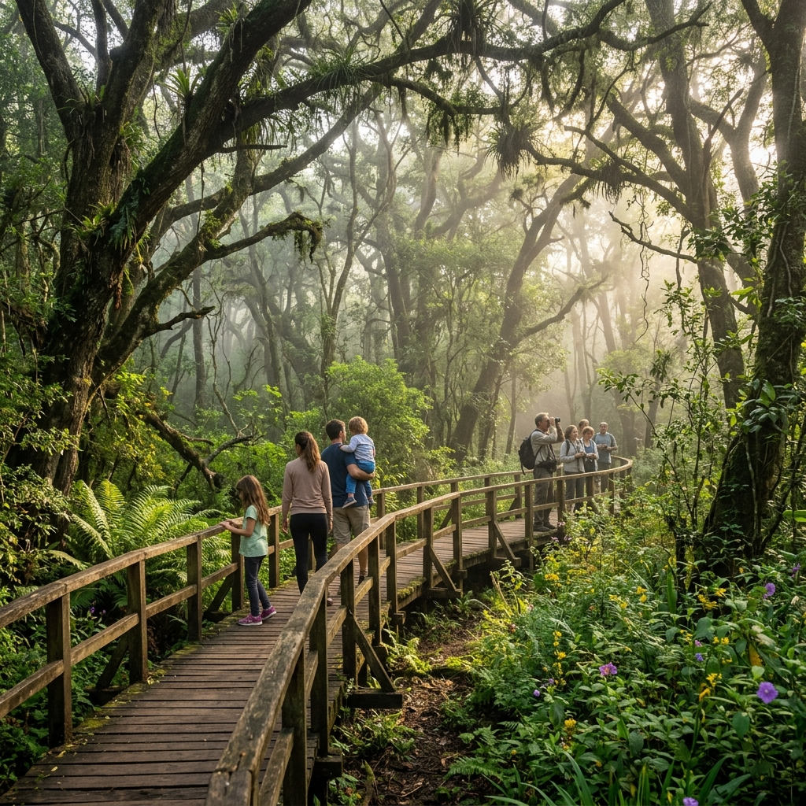

La naturaleza y la cultura, de la mano.
Si cada municipio del mundo creara una reserva natural, sería una de las medidas más eficaces
para combatir el cambio climático y mejorar la calidad de vida urbana.
Más allá de la flora y la fauna, los principales beneficiarios de una reserva urbana son las personas que vivimos en las ciudades.
Las reservas depuran el aire, regulan el microclima local y capturan carbono, mitigando el efecto isla de calor urbano.
88% reducción temperaturaEspacios de esparcimiento, meditación y contacto con la naturaleza que mejoran el bienestar de millones de ciudadanos.
92% mejora bienestar"Aulas al aire libre" para establecimientos educativos y escenario más inmediato para la investigación científica local.
95% escuelas participantesEstabilizan la dinámica hídrica, ayudan a prevenir inundaciones y funcionan como esponjas naturales para el agua de lluvia.
75% reducción inundacionesGeneran empleo directo para guardaparques, guías y educadores, y potencian la economía de los barrios vecinos.
+70% turismo localLa protección del paisaje silvestre refuerza el sentido de pertenencia y la identidad de la comunidad con su entorno.
83% orgullo comunitarioUna diversidad sorprendente de ambientes puede encontrarse —o restaurarse— dentro de los límites de cualquier ciudad.


Las reservas urbanas son AICA —Áreas de Importancia para la Conservación de las Aves— y refugio de cientos de especies autóctonas.

Hornero, Cotorras, Benteveo, Cauquén Común, garzas, martines pescadores y decenas de migratorias de paso.
Lepidopteros, polinizadores nativos, escarabajos, libélulas y moscas florícolas esenciales para la biodiversidad.
Murciélagos nativos (grandes controladores de insectos), comadrejas, zorros, carpinchos en áreas ribereñas.
Algarrobos centenarios, selva ribereña, juncales, alerce costero, plantas autóctonas cultivadas en viveros propios.
Ranas, sapos, tortugas acuáticas, lagartos y culebras que indican la salud del ecosistema urbano.
Bertonatti propone 10 pasos fundamentales — accesibles para cualquier comunidad organizada, sin importar el tamaño del área.
Buscar tierras de dominio público o fiscal. Pueden ser pequeñas (¡incluso 1 hectárea!) o degradadas. Antiguos predios ferroviarios, cementerios o sitios históricos son candidatos ideales.
Confirmar el dominio del suelo y trabajar bajo el marco de una institución —ONG, museo, universidad— que le dé respaldo formal al proyecto.
Conocer límites, superficie y realizar un inventario biológico completo: plantas, animales, ambientes presentes y potencial de restauración.
Obtener imágenes de calidad de paisajes y especies para comunicar el valor del área y gestionar su protección ante las autoridades.
Documento breve (5-10 páginas) que explique la ubicación, los ambientes presentes, las especies detectadas y el potencial beneficio para la comunidad.
Presentar el informe formalmente solicitando la declaración de "Parque Natural y Cultural Municipal" junto a un borrador de ordenanza.
Buscar el apoyo de la comunidad e instituciones a través de redes sociales, notas de adhesión y eventos de sensibilización local.
Invitar a periodistas y medios a conocer el área para difundir su valor natural, histórico y social en la comunidad local.
Reunirse con autoridades y concejales para explicar la propuesta, responder dudas y monitorear el avance del expediente.
Presenciar la votación e, informar a organismos provinciales y nacionales. ¡Luego comienza la segunda etapa: el plan de gestión, guardaparques e infraestructura!
Reservas urbanas y parques naturales municipales ya existentes en Argentina y Latinoamérica que demuestran que es posible.
Una vez creada la reserva, comienza la segunda etapa: dotar al área de equipamiento que mejore la experiencia y proteja la biodiversidad.

Circuitos de madera que permiten recorrer los ambientes sin impacto, guiando al visitante por los puntos más destacados.
Torres y plataformas elevadas que permiten observar aves, fauna acuática y paisajes sin perturbar a los animales.
Edificio sustentable con exposiciones sobre biodiversidad local, historia del paisaje y propuestas de conservación.
Pasos de fauna sobre o bajo calles y autopistas, permitiendo que la vida silvestre se mueva libremente entre parches verdes.
Producción de plantas autóctonas para restaurar el paisaje original y proveer material vivo para la educación ambiental.
Carteles informativos con materiales naturales que orientan, educan y generan identidad visual para la reserva.
La propuesta es clara, viable y urgente. No hacen falta grandes extensiones ni grandes presupuestos.
Hace falta voluntad, comunidad y amor por el lugar donde vivimos.
"Si cada municipio del mundo creara una reserva, sería una de las medidas más eficaces e inmediatas para combatir los efectos del cambio climático a escala global."
— Claudio Bertonatti